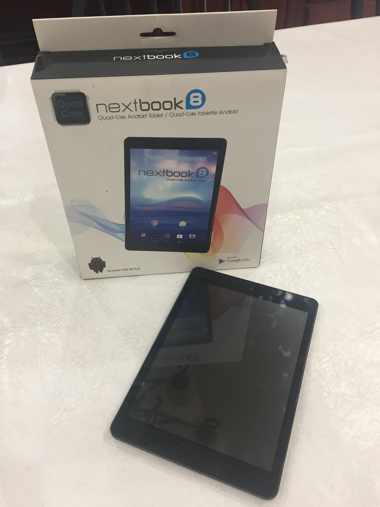

Nextbook 8 (nextbook-nxm865fd)
|  | |
| Manufacturer | Nextbook |
|---|---|
| Name | 8 |
| Codename | nextbook-nxm865fd |
| Released | 2014 |
| Category | testing |
| Original software | Android 4.2.2 |
| Hardware | |
| Chipset | Rockchip RK3188 |
| CPU | Quad-Core 1.6 GHz ARM Cortex-A9 |
| GPU | Mali-400 MP |
| Display | 7.85" 1024x768 TN |
| Storage | 8 GB NAND Flash |
| Memory | 1 GB DDR3 |
| Architecture | armv7 |
{kind=link}
| USB Networking | |
|---|---|
| Flashing | |
| Touchscreen | |
| Display | |
| WiFi | |
| FDE | |
| Mainline | |
| Battery | |
| 3D Acceleration | |
| Audio | |
| Bluetooth | |
| Camera | |
| GPS |
Unavailable
|
| Mobile data |
Unavailable
|
| SMS |
Unavailable
|
| Calls |
Unavailable
|
| USB OTG | |
| NFC |
Unavailable
|
| Accelerometer | |
|---|---|
| Magnetometer | |
| Ambient Light | |
| Proximity | |
| Hall Effect | |
| Ir TX | |
|---|---|
| TrustZone | |
The Nextbook 8 NX785QC8G is an RK3188-based tablet from 2014. The tablet was marketed under the Nextbook USA brand (now defunct), distributed under the E FUN brand, and manufactured by Yifang Digital Technology Co., Ltd.
A few months after launch, Nextbook released an update to Android 4.4 Kit Kat for tablet owners. At the same time, Nextbook released new tablet models which came with this update pre-installed. These new tablet models also came in new color varieties and more importantly were based on the slightly slower RK3188-T chipset. These new models are labelled as NX785QC8G-R.
Further confusing matters, over the years Yifang released several tablets, including some x86 Atom-based hardware, under names very similar to "Nextbook 8": the Nextbook Ares 8, Nextboot Ares 8L, Nextbook Ares 8A, Nextbook Premium 8HD, Nextbook Premium 8SE, Nextbook Flexx 8, and Nextbook 8 Windows 8.1.
Yifang Digital is also known to have sold the same tablet hardware under various regional brands: Intenso in Western Europe, Prestigio in Russia and Eastern Europe, Master-G in South America, etc. If other brands of the same tablet are discovered please document those on this page.
Contents
Contributors
Users owning this device
How to enter flash mode
Installation
Parameter File
Kernel
Yifang and associated brands have not released kernel source. However the RK3188 SoC is supported in mainline. There are also various generic RK3188 tablet kernel trees (example).
Battery Hardware Defect
Several hardware owners have reported strange issues with battery reporting on the Nextbook 8 running Android. These issues include sudden shut downs around 15% battery, battery dropping from 100% to around 75%, and delays in powering on the device from an empty battery. The root cause of these issues was identified by ShaunMT of the FreakTab community as a hardware defect in which the cable connecting the battery to the mainboard can very easily become loose or unplugged. In response some users have fit loose material under the battery cable to keep it snug, and at least one user has soldered on longer battery cables to work around the issue.
See also
- Product Detail Page (archived)
- Android 4.4 Kit Kat Release Announcement (archived)
- Stock Android 4.4.2 Update RKFW Image (sha1sum: 31da26cd18be4fe867ceef201cb9eea5bd0f2dea)